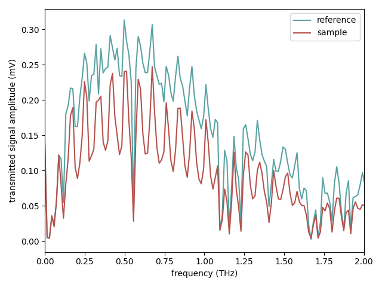
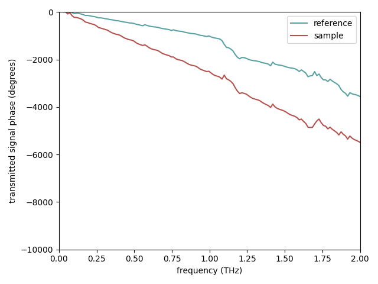
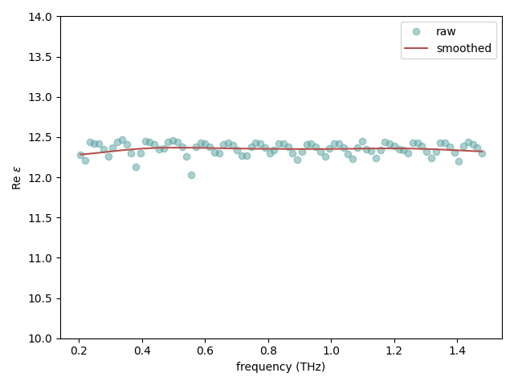
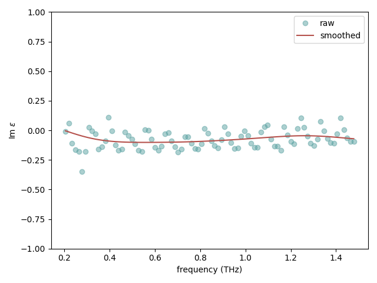
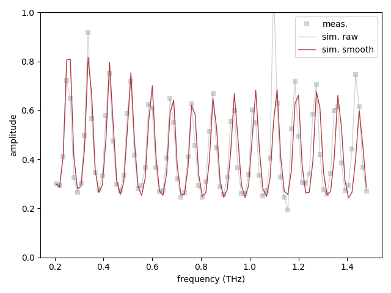
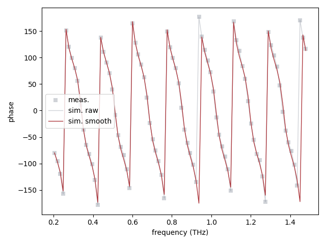

Note
Go to the end to download the full example code
Extraction example
Tutorial.
import matplotlib.pyplot as plt
import numpy as np
import tdsxtract as tx
Define sample thickness
sample_thickness = 500e-6
First we load the reference and sample signals
We convert the position to time delay and plot the data
time = tx.pos2time(position)
time_ps = time * 1e12
plt.figure()
plt.plot(time_ps, v_ref, label="reference", c="#5aa2a2")
plt.plot(time_ps, v_samp, label="sample", c="#b5514c")
plt.xlabel("time (ps)")
plt.ylabel("transmitted signal (mV)")
plt.xlim(time_ps[0], 30)
plt.legend()
plt.tight_layout()
By looking at the first peak shift, we can get a rough estimate of the permittivity
12.3904
We now switch to the frequency domain by computing the Fourier transform
freqs_ref, fft_ref = tx.fft(time, v_ref)
freqs_samp, fft_samp = tx.fft(time, v_samp)
freqs_THz = freqs_ref * 1e-12
plt.figure()
plt.plot(freqs_THz, np.abs(fft_ref), label="reference", c="#5aa2a2")
plt.plot(freqs_THz, np.abs(fft_samp), label="sample", c="#b5514c")
plt.xlabel("frequency (THz)")
plt.ylabel("transmitted signal amplitude (mV)")
plt.xlim(0, 2)
plt.legend()
plt.tight_layout()
plt.figure()
plt.plot(
freqs_THz,
np.unwrap(np.angle(fft_ref)) * 180 / tx.pi,
label="reference",
c="#5aa2a2",
)
plt.plot(
freqs_THz,
np.unwrap(np.angle(fft_samp)) * 180 / tx.pi,
label="sample",
c="#b5514c",
)
plt.xlabel("frequency (THz)")
plt.ylabel("transmitted signal phase (degrees)")
plt.xlim(0, 2)
plt.ylim(-10000, 0)
plt.legend()
plt.tight_layout()
- 
- 
Let’s calculate the transmission coefficient
transmission = fft_samp / fft_ref
#### TODO: wavelet transform check
# import pywt
# alpha = 0.01
#
# cA, cD = pywt.dwt(fft_ref, "coif4", "smooth")
# cD = pywt.threshold(cD, alpha, "soft")
# fft_ref_wl = pywt.idwt(cA, cD, "coif4", "smooth")
#
# cA, cD = pywt.dwt(fft_samp, "coif4", "smooth")
# cD = pywt.threshold(cD, alpha, "soft")
# fft_samp_wl = pywt.idwt(cA, cD, "coif4", "smooth")
# transmission_wl = fft_samp_wl / fft_ref_wl
#
#
# cA, cD = pywt.dwt(transmission, "coif4", "smooth")
# cD = pywt.threshold(cD, alpha, "soft")
# transmission_wl = pywt.idwt(cA, cD, "coif4", "smooth")
#
# transmission_wl = transmission_wl[:513]
# transmission = transmission_wl
#
# # freqs_THz, imin, imax = restrict(freqs_THz, 0.1, 2.5)
# # transmission = transmission[imin:imax]
# plt.close("all")
# plt.figure()
# plt.plot(freqs_THz, np.abs(transmission),"-")
# plt.plot(freqs_THz, np.abs(transmission_wl),"--")
# plt.xlabel("frequency (THz)")
# plt.ylabel("transmission amplitude")
# plt.xlim(0, 2)
# plt.ylim(0, 1)
# plt.tight_layout()
#
# plt.figure()
# plt.plot(freqs_THz, (np.angle(transmission)) * 180 / np.pi,"-")
# plt.plot(freqs_THz, (np.angle(transmission_wl)) * 180 / np.pi,"--")
# plt.xlabel("frequency (THz)")
# plt.ylabel("transmission phase (degree)")
# plt.xlim(0, 2)
# plt.tight_layout()
#### adapted phase unwrapping scheme: discards the noisy phase at low frequencies,
# and carries out a normal unwrapping with the reliable phase part. A missing phase
# profile at low frequencies down to DC is then extrapolated from the unwrapped phase
# at higher frequencies. In most cases the assumption of a linear phase is sufficient
# (Duvillaret et al. 1996). The whole phase profile is then forced to start at zero.
#
# phi = np.angle(transmission)
# phi_unwrapped = np.unwrap(phi)
# freqs1, imin, imax = restrict(freqs_THz, 0.1, 1)
# phi1 = phi[imin:imax]
#
# phi1_unwrapped = np.unwrap(phi1)
# fit = np.polyfit(freqs1, phi1_unwrapped, 1)
#
#
# plt.close("all")
# plt.figure()
# plt.plot(freqs_THz, phi_unwrapped)
# plt.plot(freqs1, phi1_unwrapped, "o")
# plt.plot(freqs_THz, fit[0] * freqs_THz)
# plt.plot(freqs_THz, fit[0] * freqs_THz + fit[1], "--")
# plt.show()
#
#
# plt.xlabel("frequency (THz)")
# plt.ylabel("transmission phase (rad)")
# plt.tight_layout()
#
# phi = fit[0] * freqs_THz
# transmission = np.abs(transmission) * np.exp(1j * phi)
freqs_THz, imin, imax = tx.restrict(freqs_THz, 0.2, 1.5)
transmission = transmission[imin:imax]
To describe our sample we use a Sample object
sample = tx.Sample(
{
"unknown": {"epsilon": None, "mu": 1.0, "thickness": sample_thickness},
}
)
We ar now ready to perform the extraction
wavelengths = tx.c / freqs_THz * 1e-12
epsilon_opt, h_opt, opt = tx.extract(
sample,
wavelengths,
transmission,
eps_re_min=1,
eps_re_max=100,
eps_im_min=-10,
eps_im_max=10,
epsilon_initial_guess=eps_guess,
)
Smooth the permittivity data
eps_smooth = tx.smooth(epsilon_opt)
Plot extracted values
plt.figure()
plt.plot(freqs_THz, epsilon_opt.real, "o", label="raw", alpha=0.5, c="#5aa2a2")
plt.plot(freqs_THz, eps_smooth.real, label="smoothed", c="#b5514c")
plt.xlabel("frequency (THz)")
plt.ylabel(r"Re $\varepsilon$")
plt.ylim(10, 14)
plt.legend()
plt.tight_layout()
plt.figure()
plt.plot(freqs_THz, epsilon_opt.imag, "o", label="raw", alpha=0.5, c="#5aa2a2")
plt.plot(freqs_THz, eps_smooth.imag, label="smoothed", c="#b5514c")
plt.xlabel("frequency (THz)")
plt.ylabel(r"Im $\varepsilon$")
plt.ylim(-1, 1)
plt.legend()
plt.tight_layout()
- 
- 
Check the transmission
t_model = tx.sample_transmission(
epsilon_opt, h_opt, sample=sample, wavelengths=wavelengths
)
t_model_smooth = tx.sample_transmission(
eps_smooth, h_opt, sample=sample, wavelengths=wavelengths
)
gamma = 2 * tx.pi / wavelengths
thickness_tot = sum([k["thickness"] for lay, k in sample.items()])
phasor = np.exp(-1j * gamma * thickness_tot)
fig, ax = plt.subplots()
ax.plot(
freqs_THz,
np.abs(transmission) ** 2,
"s",
label="meas.",
alpha=0.3,
lw=0,
c="#656e7e",
mew=0,
)
ax.plot(
freqs_THz,
np.abs(t_model) ** 2,
"-",
label="sim. raw",
alpha=0.3,
lw=1,
c="#656e7e",
mew=0,
)
ax.plot(
freqs_THz,
np.abs(t_model_smooth) ** 2,
"-",
label="sim. smooth",
alpha=1,
lw=1,
c="#AE383E",
)
ax.set_ylim(0, 1)
ax.set_xlabel("frequency (THz)")
ax.legend()
ax.set_ylabel(r"amplitude")
plt.tight_layout()
fig, ax = plt.subplots()
ax.plot(
freqs_THz,
(np.angle(phasor * transmission)) * 180 / tx.pi,
"s",
label="meas.",
alpha=0.3,
lw=0,
c="#656e7e",
mew=0,
)
ax.plot(
freqs_THz,
(np.angle(t_model)) * 180 / tx.pi,
"-",
label="sim. raw",
alpha=0.3,
lw=1,
c="#656e7e",
mew=0,
)
ax.plot(
freqs_THz,
(np.angle(t_model_smooth)) * 180 / tx.pi,
"-",
label="sim. smooth",
alpha=1,
lw=1,
c="#AE383E",
)
ax.set_xlabel("frequency (THz)")
ax.legend()
ax.set_ylabel(r"phase")
plt.tight_layout()
- 
- 
Total running time of the script: (0 minutes 8.213 seconds)